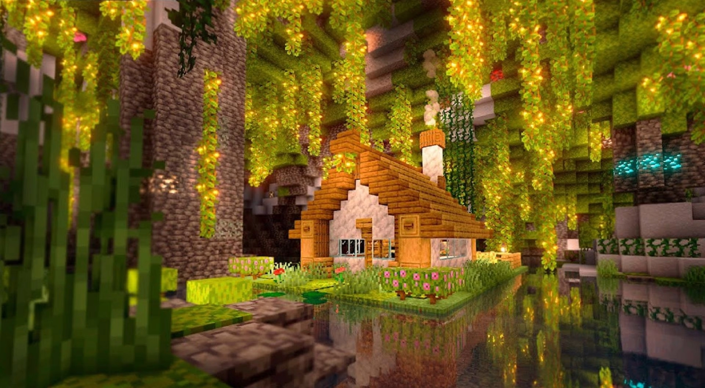
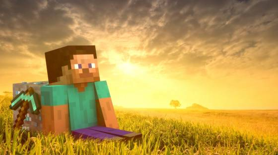
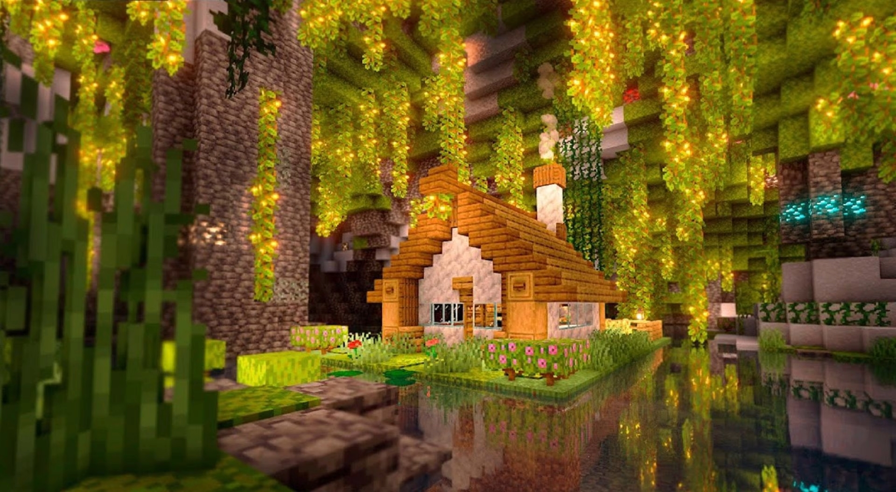
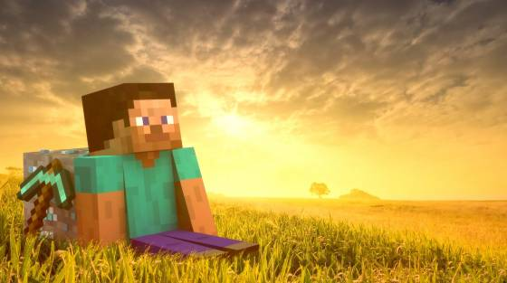

Bevezető
Minecraft
A Minecraft egy sandbox stílusú videojáték, amelyet a Mojang Studios fejlesztett és kiadott. A játék egy végtelenül kreatív világba kalauzol, ahol a játékosok szabadon felfedezhetnek, építhetnek és túlélhetnek.
A Minecraftban nincs meghatározott cél vagy történet, így a játékosok teljes kreatív szabadságot élveznek. A világot blokkok alkotják, amelyeket a játékosok felhasználhatnak építkezéshez, bányászathoz, növénytermesztéshez és más tevékenységekhez.
A Minecraftban rengeteg lehetőség van. A játékmenet során felfedezheted az állandóan változó világot, megküzdhetsz veszélyes lényekkel, felépíthetsz saját házakat, városokat vagy akár monumentális építményeket, játszhatsz barátaiddal vagy más játékosokkal online, részt vehetsz kalandokban és küldetésekben, vagy akár megteremtheted saját játékstílusodat és történetedet.
A Minecraft világában különleges biomek találhatók, mint például erdők, hegyek, sivatagok, jeges síkságok és vizek. Mindegyik biomban egyedi növény- és állatvilág vár felfedezésre, és lehetőséget nyújtanak különböző erőforrások beszerzésére és új kalandokra.
A játékban számos hasznos tárgyat és eszközt készíthetsz, mint például fegyverek, páncélok, eszközök és építőelemek. A bányászat során értékes nyersanyagokat találhatsz, amelyeket felhasználhatsz az építkezéshez és a fejlesztésekhez. A növénytermesztés révén saját élelmiszert termeszthetsz, állatokat tenyészthetsz és farmokat építhetsz.
A Minecraft kalandokat is kínál. Fedezz fel elrejtett barlangrendszereket, találkozz különleges lényekkel, harcolj veszélyes mobokkal és teljesítsd az eléd állított küldetéseket. A játékban találkozhatsz NPC-kel (non-player character), akik kereskedést, küldetéseket vagy segítséget kínálnak. A kalandok során felfedezhetsz ősi templomokat, erődítményeket vagy akár felkereshetsz dimenziókat, mint például az End vagy a Nether.
A Minecraftot a közösség is nagyban formálja. Rengeteg mod elérhető, amelyek új tartalmat, funkcionalitást vagy akár teljesen új játékstílust adnak a Minecrafthoz. Készíthetsz saját pályákat, szerkeszthetsz textúrákat, és megoszthatod alkotásaidat a közösséggel.
A Minecraft sokféle játékstílust kínál, attól kezdve, hogy békésen felfedezed a világot és építkezel, egészen a túlélési módig, ahol meg kell küzdened az éhséggel, a veszélyes lényekkel és az időjárási viszontagságokkal. Válaszd ki a neked legmegfelelőbb módot és indulj el a Minecraft végtelenül kreatív világában!
Játékmenet
A Minecraft játékmenete változatos és izgalmas kalandokat kínál. Itt van néhány főbb elem, amelyeket felfedezhetsz és kihasználhatsz a játékban:
- Felfedezés: A Minecraft világa hatalmas területekből áll, amelyeket felfedezhetsz. Fedezz fel új biómokat, különleges helyszíneket és érdekes természeti képződményeket. Találj meg rejtett erőforrásokat, mint például ércércek vagy kincsesládák.
- Részvétel a gazdaságban: A Minecraftban kereskedelmi lehetőségek is várnak rád. Találkozz NPC-kel, akik különféle árucikkeket kínálnak. Vásárolj vagy adj el tárgyakat, alapanyagokat, fegyvereket és más hasznos eszközöket.
- Építkezés és kreativitás: A Minecraft a kreativitásod szabadságát kínálja. Használd a különféle blokkokat és építőelemeket, hogy megalkoss saját világodat. Építs házakat, városokat, várakat vagy akár műalkotásokat. A fantáziád szabhat határt a kreatív projekteknek.
- Harc és túlélés: A Minecraft világában veszélyek is leselkednek rád. Harcolj meg a különféle lényekkel, mint például a zombik, a szörnyek vagy a pókok. Vigyázz az éhségedre és az életjelzőidre, és gondoskodj a biztonságos menedék kialakításáról éjszaka.
- Kutatás és fejlődés: A Minecraftban folyamatosan fejlődhetsz és új készségeket sajátíthatsz el. Fedezz fel új recepteket az alapanyagok feldolgozásához és az új eszközök, fegyverek, felszerelések készítéséhez. Találj meg ritka és erőteljes tárgyakat, amelyek segíthetnek a kalandjaidban.
Blokkok
A Minecraft világában rengeteg különböző blokk található, amelyeket felhasználhatsz az építkezéshez, dekorációhoz és kalandjaid során. Néhány gyakran használt blokk közé tartozik:
- Kövek: A Minecraftban többféle kőblokk áll rendelkezésedre. Van például sima kő, gránit, andezit és diorit. Ezeket a blokkokat felhasználhatod az épületek, falak és járdák építéséhez.
- Fák: Különböző fajtájú fából készült blokkokat találhatsz a Minecraftban, például tölgyfából, nyírfából, akácfából és dzsungelfából. Ezeket a blokkokat felhasználhatod a bútorok, kerítések és egyéb dekorációk készítéséhez.
- Építőkövek: A Minecraftban számos építőkőblokk található, mint például tégla, nether tégla, kvarc és vörösföld. Ezeket a blokkokat felhasználhatod az épületek részleteinek kidolgozásához vagy különleges textúrák eléréséhez.
- Föld és növényzet: A Minecraftban található blokkok közé tartozik a fű, a föld, a homok, a kaktusz és a növények. Ezeket a blokkokat használhatod a táj megformálásához, kertek és farmok kialakításához.
- Ércércek: A Minecraftban többféle ércérc blokkot találsz, mint például vasérc, aranyérc, gyémántérc és redstone érc. Az ércérc blokkokat bányászhatod és feldolgozhatod, hogy értékes nyersanyagokhoz juss és fejleszthesd eszközeidet.
Képek
 


